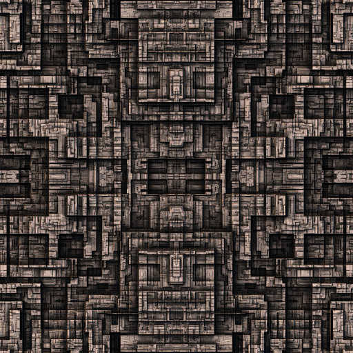

<!DOCTYPE html>
<html>
<meta name="apple-mobile-web-app-capable" content="yes"/>
<script src="ARJS/aframe.min.js"></script>
<script src="ARJS/aframe-ar.js"></script>

<a-scene embedded arjs = 'trackingMethod: best;'>

<a-anchor hit-testing-enabled='true'>	
		
<!--	
	<a-plane src ="textures/10742.jpg" height= "3" width = "3" color="grey" position="0 0 0"></a-plane>
<a-text value = "\n\nDaniel Wise -Augmented Reality Developer\n\nAR Bots.com\n\n@dwiseXone\n\n123456\n\nsomething@gmail.com" position="0 0 0" height="3" width="3" color="red"></a-text>
<a-image src="textures/logo.png" width="2" height="2" position="-1 -1 0"></a-image>
		 
</a-anchor>
	<a-camera-static/>
</a-scene>
-->
<a-scene embedded arjs='sourceType: camera;'>
    <a-assets>
        
    </a-assets>
    <a-image src="#building_info" position="0 0 0" scale="2.5 2.5 2.5" rotate="0 0 90"></a-image>

    <!--<a-marker-camera preset="greenTriangleMarker"></a-marker-camera>-->
    <a-marker-camera type='pattern' url='patterns/pattern-marker.patt'></a-marker-camera>
</a-anchor>
	<a-camera-static/>
</a-scene>
</a-scene>
</html>